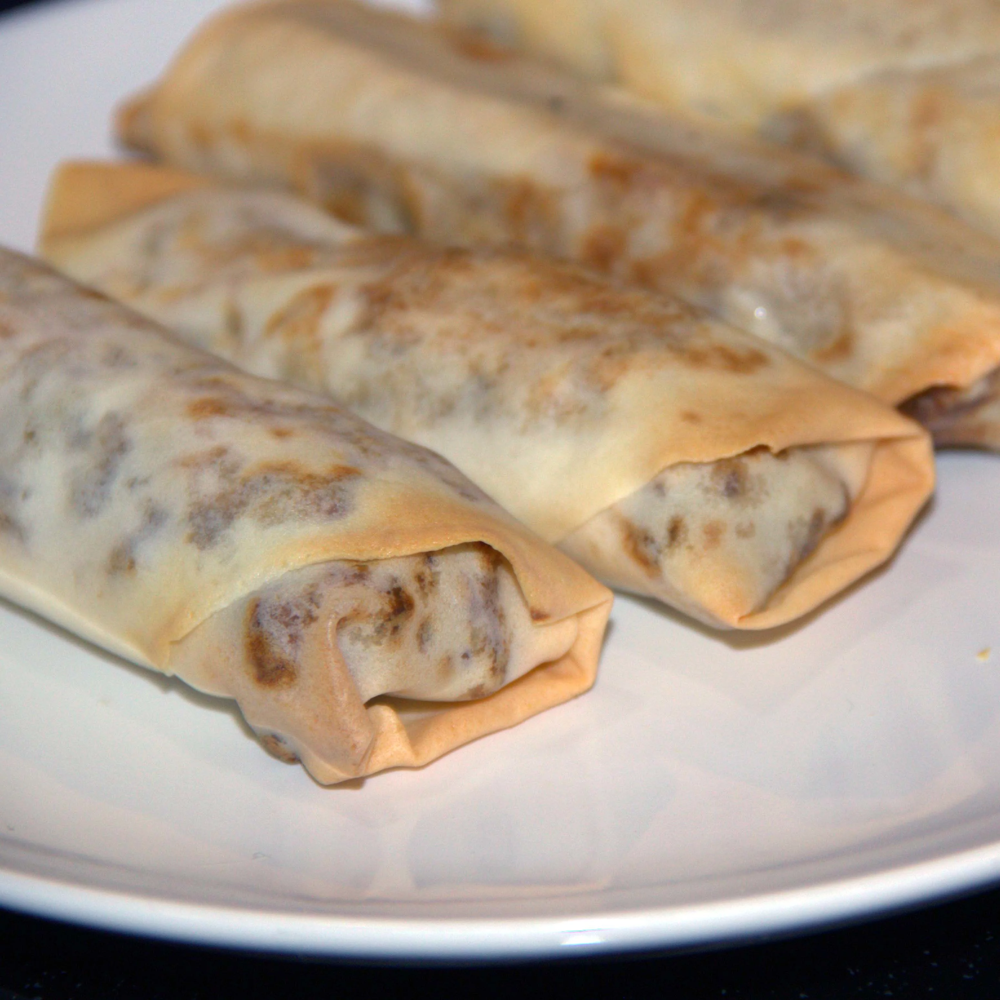

Spring Rolls Recipe

Easy Spring Rolls Recipe
This is an easy spring roll recipe that I cook in an air fryer, but you could also cook it in the over. I like to serve it with sweet chile sauce.
Ingredients
- 2 ounces dried rice noodles
- 1 tablespoon sesame oil
- 7 ounces ground beef
- 1 cup frozen mixed vegetables
- 1 small onion, diced
- 3 cloves garlic, crushed
- 1 teaspoon soy sauce
- 1 (16 ounce) package egg roll wrappers
- 1 tablespoon vegetable oil, or to taste
Steps
- Soak noodles in a bowl of hot water until soft, about 5 minutes. Cut noodles into shorter strands.
- Heat sesame oil in a wok over medium-high heat. Add ground beef, mixed vegetables, onion, and garlic. Cook until beef is almost browned throughout, about 6 minutes. Remove from heat. Stir in noodles; let stand until juices have been absorbed. Add soy sauce to the filling.
- Preheat air fryer to 350 degrees F (175 degrees C).
- Lay out 1 egg roll wrapper onto a flat work surface; place a diagonal strip of filling across the wrapper. Fold the top corner over the filling; fold in the two side corners; brush center with cold water and roll spring roll over to seal. Repeat with the remaining wrappers and filling.
- Brush the tops of the spring rolls with vegetable oil. Arrange a batch of spring rolls into the basket of the air fryer; cook until crisped and lightly browned, about 8 minutes. Repeat until all are cooked.